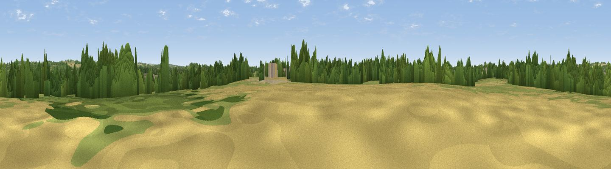

Park Hills
#40629 in England · top 75% of its area beats it · near Fair OakWhere it is
The exact computed spot (SU 50396 19398). Click the marker for map links.
The view, rendered

A 360° render of this exact spot computed from the terrain model, tree cover and land cover — summer colours, afternoon light, calibrated against photographs of famous viewpoints. Real trees, hedges and buildings will differ in detail.
The panorama
Grey silhouette: terrain skyline in each direction (720 bearings, Earth curvature and refraction included). Dashed green: skyline with trees (+15 m) and buildings (+8 m) as obstacles. Blue strip: how far the ground is visible on each bearing.
Where the view opens
Wedge length = distance to the farthest visible ground on that bearing (vegetation-aware). Rings at 10, 25 and 50 km.
What fills the view
48% grassland · 33% woodland · 11% cropland · 7% built-up ·
Angular shares of the visible panorama (visual magnitude), not map area. Landscape diversity 0.51 (0–1 Shannon).
Key numbers
More beautiful places nearby
The staircase of upgrades: each row has a higher view potential than everything closer. Driving times are estimates from straight-line distance, calibrated against real road routing — check an actual route before setting out.
| Place | Direction | Drive | Score |
|---|---|---|---|
| Viewpoint near Lower Upham | ESE · 2 km | ~6 min | 37.4 |
| Winters Hill | SE · 3 km | ~8 min | 41.3 |
| Viewpoint near Owslebury | NE · 4 km | ~10 min | 52.3 |
| Viewpoint near Cheriton | NE · 8 km | ~16 min | 58.2 |
| Deacon Hill | N · 8 km | ~16 min | 59.8 |
| Cheesefoot Head | NNE · 9 km | ~17 min | 62.0 |
| Viewpoint near Chilcomb | NNE · 9 km | ~18 min | 63.9 |
| Beacon Hill | ENE · 10 km | ~20 min | 71.7 |
50.97180, -1.28362 · source: osm peak · position refined by local search. Computed location — check access rights before visiting.